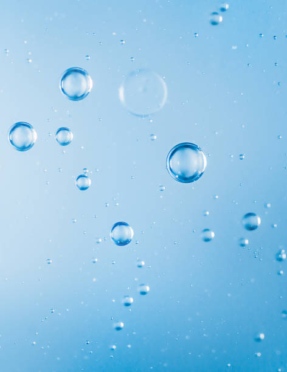
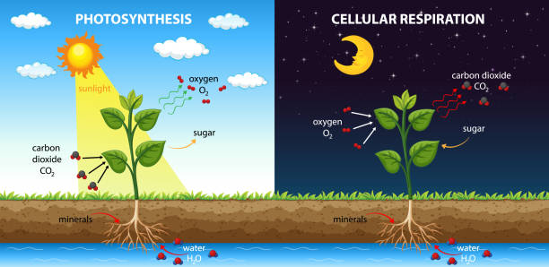
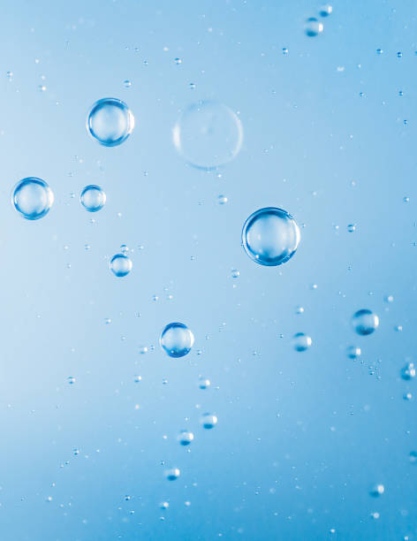
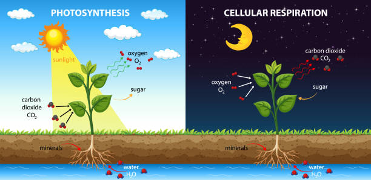

Fun Facts About: Oxygen
- Its atomic number is 8, and its atomic mass is 15.999 amu
- It is a gas that is naturally found as a diatomic molecule (O2, rather than simply O)
- When it's in the solid or liquid state, it is a pale blue color
- Oxygen dissolves in water (this property allows fish to breath underwater!)
- It makes up about 21% of Earth’s atmosphere and 50% of Earth’s crust
- Just like carbon, it plays an important role in both photosynthesis and cellular respiration
- When oxygen is in an "excited state", it produces the colored hues of an aurora
(All photos were taken from iStock Getty Images)

 


